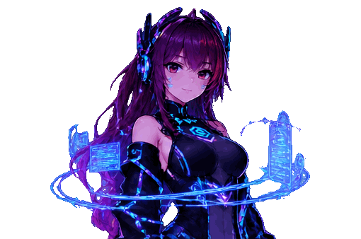

Efficient AI
Exploring smaller models, quantization and techniques that reduce computational demands.
SYNTRIX RESEARCH PROJECT
TinyBrain is an experimental research initiative exploring how artificial intelligence can become more efficient, accessible and resource-conscious.
Explore TinyBrain
01 / THE IDEA
Powerful AI systems often demand substantial computing resources. TinyBrain explores alternative approaches that could make intelligent computing more practical on modest hardware.
The long-term vision is to investigate efficient model execution, memory management and intelligent resource allocation.
02 / RESEARCH DIRECTIONS
Exploring smaller models, quantization and techniques that reduce computational demands.
Investigating how model data and computing resources can be managed efficiently.
Researching ways to distribute workloads according to available system resources.
03 / THE VISION
TinyBrain aims to contribute to a future where useful AI experiences can run on a wider range of devices, including resource-constrained systems.
This remains an evolving research initiative. Its architecture, performance targets and capabilities are still under development.
04 / BUILT WITH PURPOSE
TinyBrain is part of Syntrix Dynamics Technologies' broader interest in accessible technology, independent computing and practical AI research.
Back to Projects